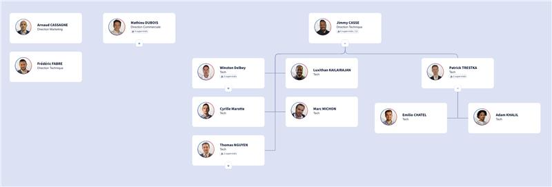

Acknowledge
ACKnowledge est une société de services informatiques basée à Paris, spécialisée dans la cybersécurité, le cloud et les approches DevSecOps. Elle accompagne les entreprises dans la modernisation, la sécurisation et le support de leurs systèmes d'information.
L’entreprise a notamment une agence à Paris dans le 14ᵉ arrondissement (Héron Building, 10ᵉ étage – 66 Avenue du Maine, 75014 Paris).
Contexte du stage
Ce stage s’inscrit dans ma deuxième année de BTS SIO option SISR, réalisé au sein d’ACKnowledge à Paris-Montparnasse. J’ai eu l’opportunité d’évoluer dans un environnement professionnel axé sur la cybersécurité, les infrastructures cloud et le support technique, en lien direct avec les enjeux actuels de protection des systèmes d'information.
Missions réalisées
- Support utilisateurs niveau 2
- Gestion des accès sécurisés (BeyondTrust)
- Administration de machines virtuelles (vCenter)
- Analyse et optimisation de règles firewall
- Participation à des environnements Azure
- Gestion du parc informatique :
- Réalisation d’un LLD (Low-Level Design) pour cartographier le réseau
- Repérage de toutes les prises RJ45 et vérification de leur brassage
- Documentation complète de l’infrastructure réseau et du parc informatique
Organigramme de l’entreprise

Organigramme représentant la structure interne de l’entreprise Acknowledge, mettant en évidence les différents pôles et responsabilités.